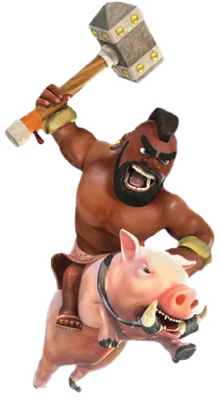

DOORS but with ANBAS is one of the Anbas games
Itch.io pageAnbas
Anbas is just rush from doors but he screams when rushing though the room
FUN FACT: he emits a bright green light
Hog rider
Hog rider is just ambush from doors but instead of flickering the lights when ariving, you will hear "Hog rider!" in the distance.